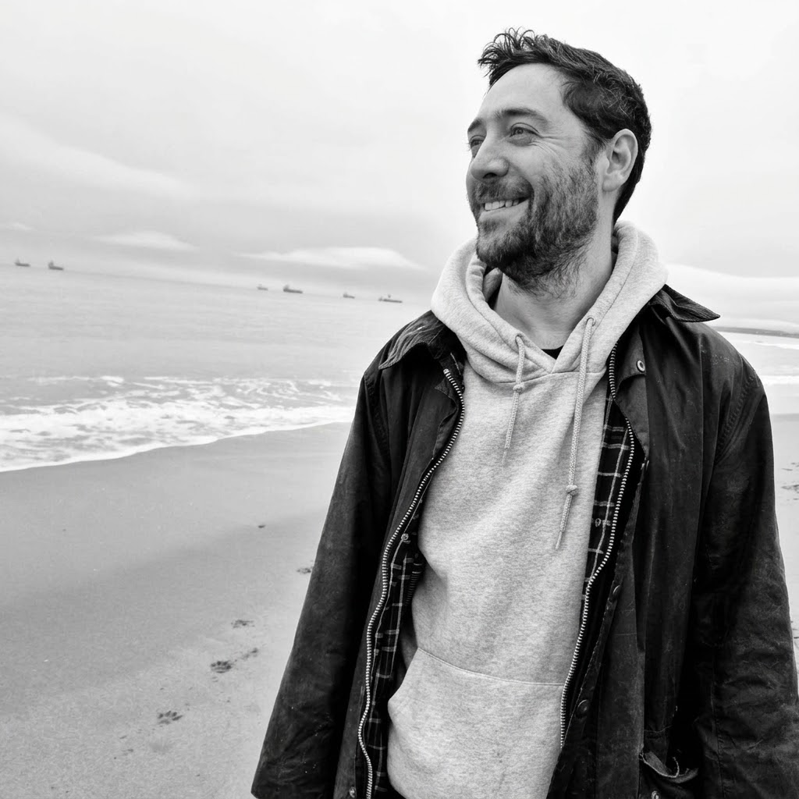
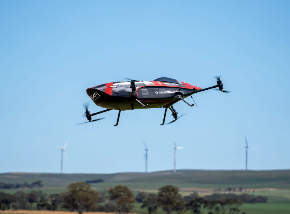
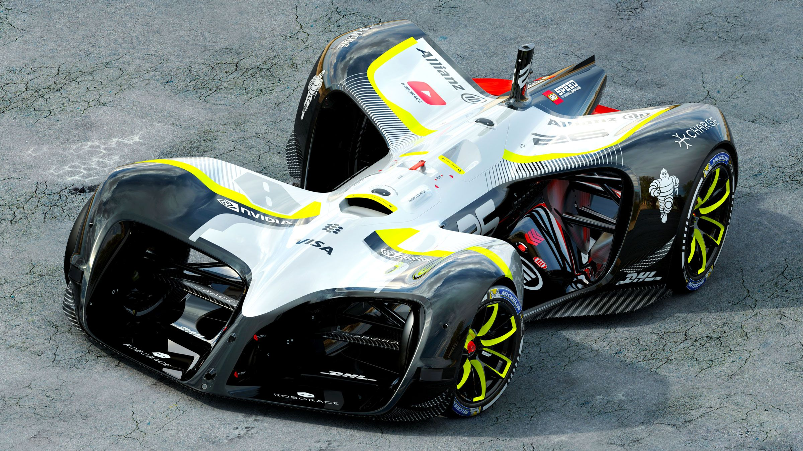
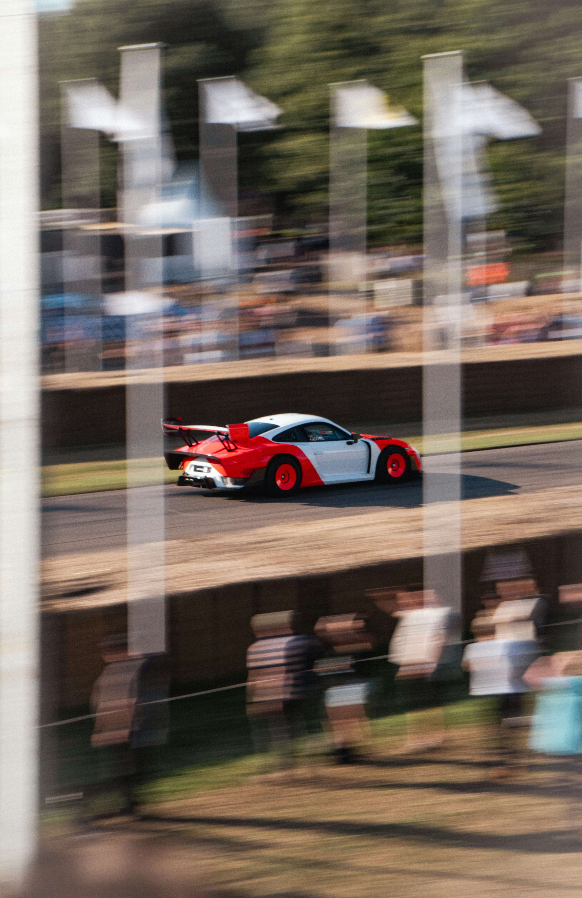
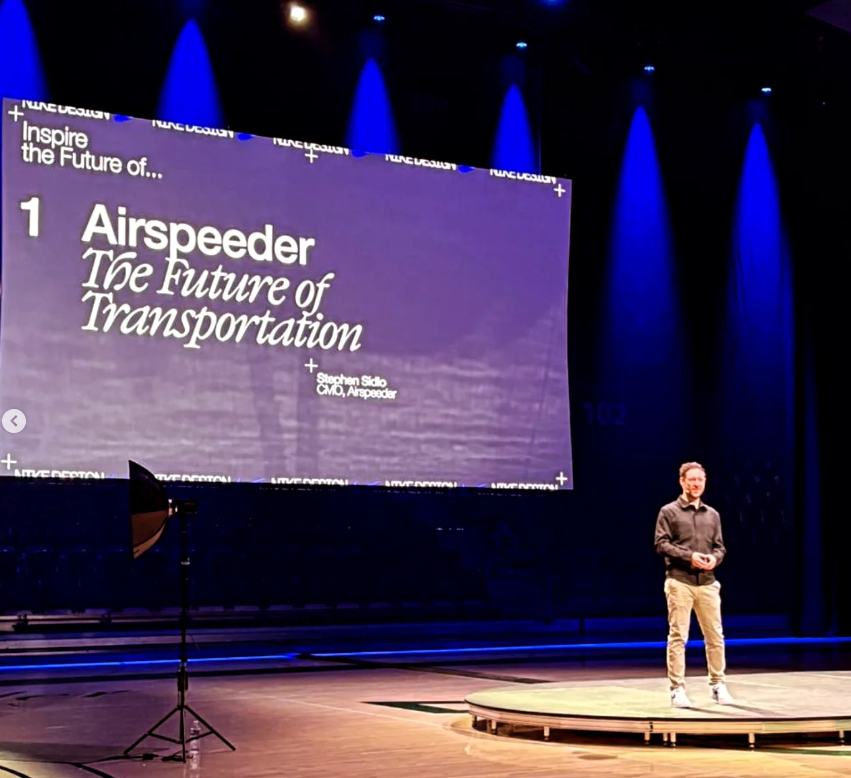
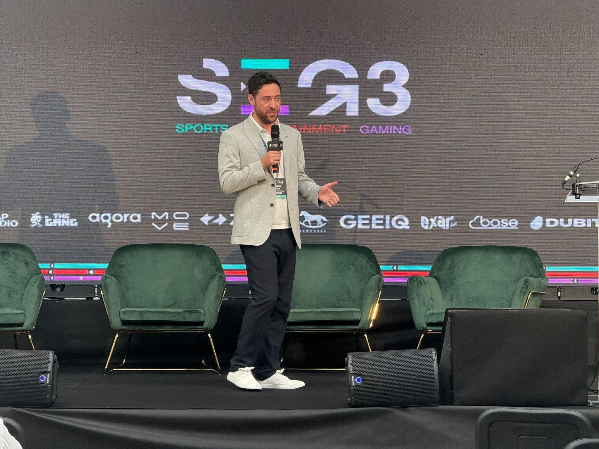
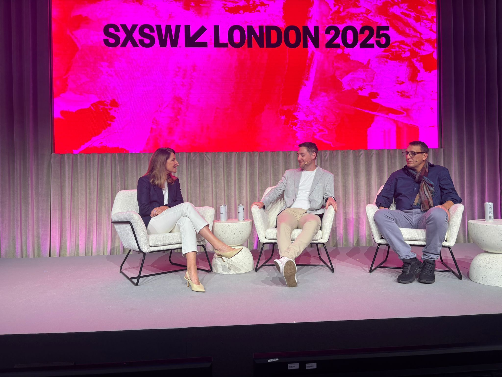
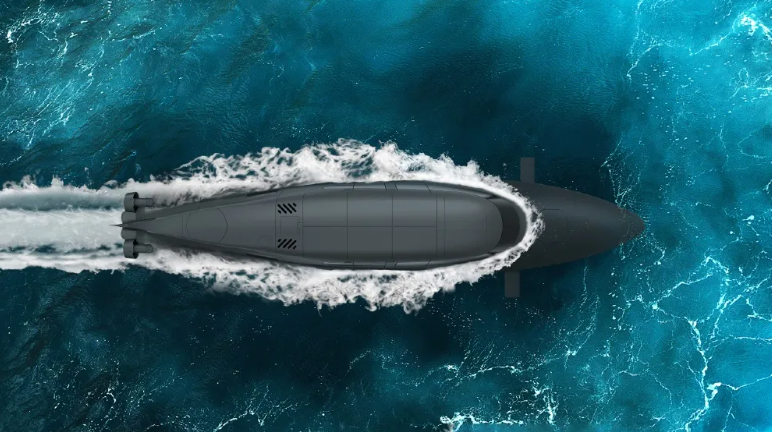

Building brands at the frontier of innovation
Stephen Sidlo is an award-winning marketing and media strategist who builds the brands, stories and commercial ecosystems that help the world's most innovative companies reach their full potential.

Driven by a belief that world-changing ideas deserve the boldest stories, Stephen has spent his career at the frontier, helping companies rewrite what is possible across eVTOL aviation, autonomous motorsport, electric vehicles, defence and deep tech.






